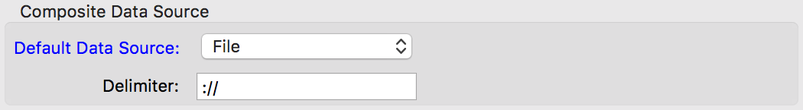

This chapter will explain the preferences used to define and configure data sources for CS-Studio.
The preference pages will allow to configure data sources, and can be found opening the Preferences dialog and navigating to the CSS Core ⊳ Data Sources category. These take place of the old CSS Core ⊳ EPICS and CSS Core ⊳ Diirt preferences, allowing to configure EPICS Channel Access parameters, and other data sources available in the future.
When a property is changed inside the Data Sources page on in one of its sub-pages, CS-Studio requires to be restarted in order to have the new values be applied. For this reason a dialog is displayed allowing to restart the application immediately, or postpone it for a later time.

The DIIRT Configuration Directory property defines where DIIRT (the library used to talk with data sources) will find its configuration files.
If a valid configuration directory (see
Programmer's Notes) is found,
then all other properties in this page and all the sub-pages will
have their default values set from the DIIRT configuration files.
If not, then the values in the configuration/plugin_customization.ini
file (inside the CS-Studio application's folder) are used.
When a property is overridden inside the Composite Data Source group, or in any of the Data Sources sub-pages, the property's caption will be painted in blue. Reverting the property to its default value (manually or through the Restore Defaults button) will revert the caption's color to its default.
